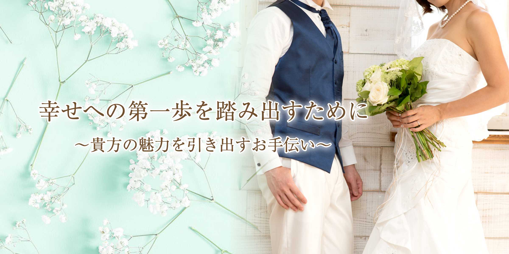

専門スキルを持つカウンセラーに相談できる
基礎心理カウンセラーの資格を持つカウンセラーが、会員さまのご希望やお悩みをじっくり丁寧にヒアリングします。
〒130-0023 東京都墨田区立川1-2-8 赤津ビル1階 / 森下駅A5出口から徒歩1分
受付時間 10:00-18:00（土曜・日曜・祝日を除く）

コンカツトーキョーTTCは、会員数97,857名、日本最大級の結婚相談所ネットワーク「IBJ」の正規加盟店です。
IBJでは、事前に独身証明書などの書類を提出された「真剣にご結婚をお考えの方」だけに、安心安全のお見合いを毎月79,000件以上ご提供。年間15,300人以上がご成婚されています。
| 男性 | 女性 | |
|---|---|---|
| 年齢 | 38歳 | 34歳 |
| 在籍日数 | 303日 | 251日 |
| お見合い数 | 11回 | 10回 |
| 交際数 | 5名 | 4名 |
| 交際日数 | 127日 | 125日 |
2023年に成婚した15,374名のうち、代表的な成婚者像は男性38歳／女性34歳でした。在籍日数約9カ月、交際日数約4カ月程度と、短い期間で結婚までの意思決定をしています。
コンカツトーキョーTTCのホームページをご覧いただき、ありがとうございます。基礎心理カウンセラーの資格を持ったカウンセラーが、親切丁寧にヒアリングいたしますので、安心してご相談いただけます。
小西詠子は東京都江東区で生まれ、小学校から社会人になるまで札幌市で過ごしました。就職した会社で社内結婚し、退職と同時に東京へ転居。夫とともに保険代理店を開業し、数百組のご夫婦からご相談を受けてきました。
お客さまやそのお子さまからお相手探しを相談されることが増え、これまでの経験を活かせるのではと思い、結婚相談所を開業しました。
メインカウンセラー 小西 詠子
Three Reasons
基礎心理カウンセラーの資格を持つカウンセラーが、会員さまのご希望やお悩みをじっくり丁寧にヒアリングします。
保険代理店・ファイナンシャルプランナーとして数百組のご夫婦のお話を伺ってきた視点から、お相手探しをサポートします。
ご成婚後の生活に関するお悩みも、末永くサポート。お家探しやファイナンシャル・プランニングも専門家がお手伝いします。
全ての会員さまに提供する、基本のサポートプランです。活動の入口からご成婚まで、状況に合わせて伴走します。
Questions
無料相談で、現在の状況やご希望をお聞かせください。LINEまたはお電話からご予約いただけます。
ご本人のお気持ちを大切にしています。内容をご説明したうえで、ご納得いただいてから次のステップをご案内します。
森下駅近くの相談スペースのほか、オンライン相談にも対応しています。ご都合に合わせてご相談ください。
LINE・電話・メール等での都度相談を活用しながら、無理なく活動できる進め方を一緒に考えます。
Contact
一緒に素敵な未来へ向けて一歩踏み出しませんか。お相手探しの不安、活動の進め方、料金のことなど、まずはお気軽にお問い合わせください。